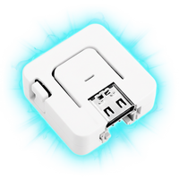
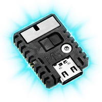
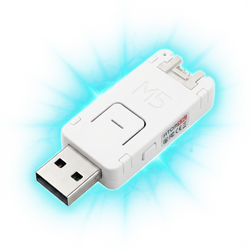

1
Get an ESP32 Controller
Pick up one of these three controllers:

M5 Atom-S3
Compact cube with USB-C

M5 Stamp-S3
Ultra-compact with USB-C

M5 Atom-S3U
Direct USB-A stick (no cable needed)
If you're unsure which one to choose, feel free to use the Amazon affiliate links above or email me at hello@jitterjail.click – I'll be glad to help.
* Advertising / Affiliate Disclosure: As an Amazon Associate, I earn from qualifying purchases. Buying through these links costs you nothing extra.